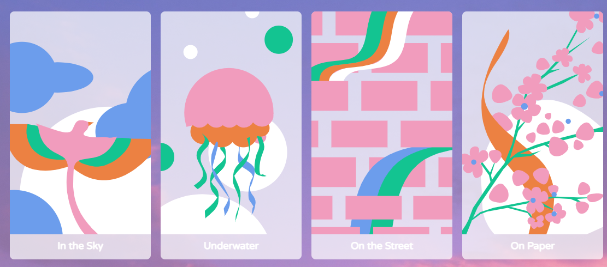

2.1
選擇畫布
進入網站後，第一步是選擇你的創作背景。你可以從《空中》、《水下》、《街道》、《畫紙》等經典名畫中挑選一幅作為你的畫布。
一個簡單的指南，帶您探索如何在畫布上用音符和樂器進行創作。
「Paint with Music」是 Google Arts & Culture 推出的一項有趣的線上實驗。它讓你可以將音樂和繪畫結合在一起，使用不同的樂器（例如長笛、薩克斯風、小喇叭、小提琴）當作畫筆，在世界名畫上進行創作。當你的畫筆劃過畫布時，不僅會留下繽紛的筆觸，更會演奏出對應的旋律。這是一個讓你同時成為畫家和音樂家的奇妙體驗！
進入網站後，第一步是選擇你的創作背景。你可以從《空中》、《水下》、《街道》、《畫紙》等經典名畫中挑選一幅作為你的畫布。
從畫面下方的工具欄選擇一種樂器畫筆，例如小提琴或喇叭。在畫布上移動你的滑鼠或手指，即可畫出獨特的線條並聆聽優美的音符。
完成創作後，點擊分享按鈕。你可以將你的作品儲存為圖片，或是附帶背景音樂的短影片，與朋友分享你的藝術結晶。